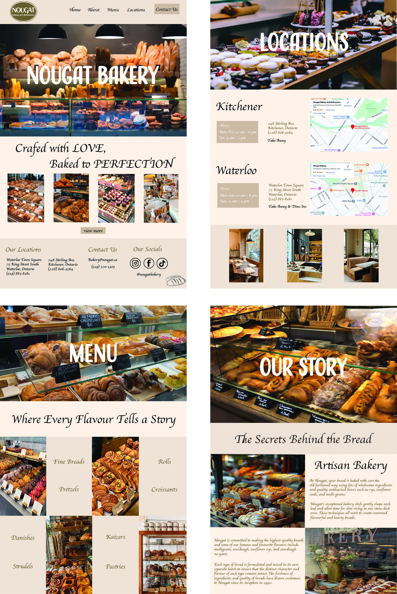
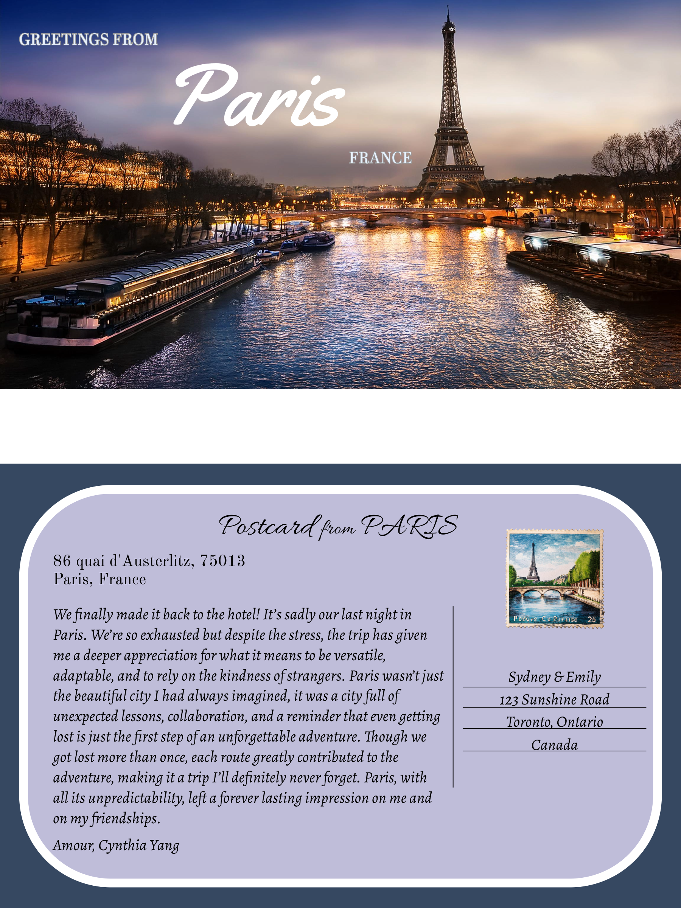

My Portfolio





.png)


Hi! My name is Cynthia Yang:) I’m studying Global Business & Digital Arts with a minor in Events Management at the University of Waterloo. I specialize in digital marketing, social media strategy, and content creation. I am primarily drawn to the fast-paced, ever-evolving world of social media, where creativity meets data-driven decision-making. I am a curious and driven marketing enthusiast with a passion for social media trends, creative content creation, and data analysis. I'm highly motivated about helping brands tell their stories in ways that captivate their audience. Beyond the classroom, I am a part of a variety of clubs at University of Waterloo. I am a social media director for the SMILE club, University of Waterloo’s Women’s basketball student team manager that specializes in graphic designs for social media content, and also part of the GBDA ambassador social media team. Within my positions, I'm great at combining creativity with strategic thinking. Whether it’s crafting content, analyzing data, or optimizing a campaign, I approach each challenge with enthusiasm and a focus on results.
| Project | Description | Link |
|---|---|---|
| SMILE Club: Social Media Director | Manages social media calendar & oversees deadlines using Notion to ensure timely and cohesive content posted. I collaborate closely with the graphic design and content creation teams to produce engaging posts that effectively promote the club's initiatives and foster a strong community presence on social media. | |
| University of Waterloo’s Women’s Basketball Student Team Manager | Specializing in creating visually engaging social media content for Instagram stories and posts, specifically designed to promote and highlight the Women's Basketball team. | |
| GBDA Ambassador | As a member of the GBDA Social Media Team, I create engaging Instagram Reels and create content to showcase the program’s vibrant community. During the Fall ‘24 Open House, I focused on capturing and promoting key moments to attract prospective students and highlight the program's diverse opportunities. | |
| Fashion for Change: Head of Events, Graphic Designer & Social Media Coordinator | As a Graphic Designer for Fashion for Change, I created and edited the showbook ‘24 and currently working on ‘25 showbook, as well as designing club merch. In my role as Head Events Manager, I successfully organized key events including the Holiday Market ‘24, currently planning ‘25 Theme Release, and the Fashion Show ‘25, ensuring seamless production and engagement. As a Social Media Coordinator, I manage the club's Instagram presence, developing strategic content to maximize event reach and promote the club's initiatives. | |
| Hera.co: Director of Events | I create networking opportunities for female-identified individuals through both in-person and virtual events. By collaborating with other event directors, I foster a sense of community around the University of Waterloo campus and organize impactful panels on career development and entrepreneurship, featuring partnerships with female-owned and operated businesses. | |
| SOL Helmets: Graphic Design Specialist & Marketing Branding Consultant | I focus on content creation and developing visually engaging graphic designs to enhance brand identity. Additionally, I manage outreach initiatives to identify and establish potential collaborations that align with the brand's vision and goal. | |
| The Women's Network Waterloo Chapter: Events Committee | I work with other executives to plan, execute, and promote major organizational events aimed at engaging women and giving them the skills and opportunities they need to succeed. Also, attending and engaging in executive board meetings, chapter TWN events, and TWN national events. |
My vision for the future is to excel in digital marketing and social media strategy, aiming to work with dynamic brands that prioritize storytelling and data-driven creativity. I hope to grow in roles that challenge my creativity and analytical skills.
Email: c62yang@uwaterloo.ca
Check out my LinkedIn: Cynthia's LinkedIn Profile